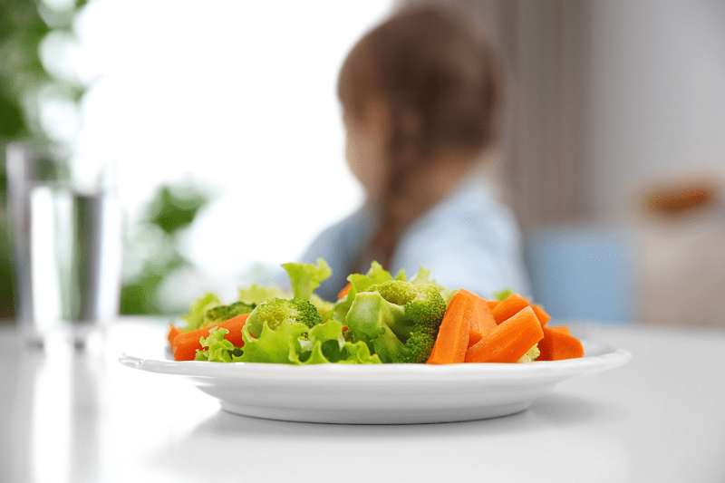
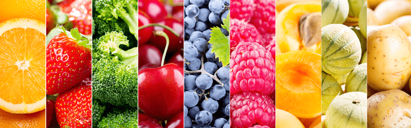

How to Encourage Loved Ones to Eat Healthy
I feel so blessed to have a husband who supports eating healthy. I will never forget something he said to me early on in our relationship, “I don’t care if we wear second-hand clothing to save money, but we will always aim to purchase organic foods.” We have held to this belief for over ten years. BUT I realize and understand that a lot of people struggle with getting the entire family on board when adapting a whole food diet, cooked and/or raw.

There’s a bit of a different approach to this topic when we are talking about kids or if we are referring to our partner. Most of us don’t have the burning desire to embrace change, especially when it comes to our food. We are creatures of habit and tend to eat the same foods repetitively. The older we get, the harder it is to break those connections to food. Not only are we fighting our taste buds, but we are also fighting social comforts, heartwarming memories, and to simplify it, the ease of quick, convenient foods that match our hectic lifestyles.
Plant a Seed of Healthy Eating
When it comes to eating a healthy diet, it can be exhilarating in the beginning, and you want everyone else to feel the same way about it as you do. You do your homework, you make shopping lists, you motor on down the road to the local grocery store and with great pride (along with a dose of giddiness) you load the shopping buggy with fresh, organic, healthy foods. Once home, you unpack the groceries, put them away, and announce to your partner, “Today we are going to start eating a better diet!” BUT it appears by the look on their face that they aren’t as enthused as you are. Arguments may rise, tears may be shed, and everyone else in the family may pile in the car and head to the local fast food restaurant while you slump to the floor cradling a head of kale in your arms in disappointment. Why can’t everyone get on board with this idea? How can I entice them?
This posting isn’t just related to kids or our immediate family; it is also directed to our extended families and friends. We love them, and we want them to eat healthy so they can live long and healthy lives. Right?! So how do we do this in a manner of grace and ease? How can we stop the tears? How can we get them to see the “light?”
Be a Role Model
My personal approach to this matter is to be a role model. Our words, our actions, our responses to life, and the foods we eat are continually witnessed every moment we are in the presence of another person. After years of frustration, I have come to learn that you can’t change others until they are ready. I have seen loved ones suffer significant health issues and no matter how much I talk about food and its healing properties, it forever falls on deaf ears because they just aren’t ready. Being a role model of healthy eating is the most powerful tool you will ever possess. Ok, ONE of the most powerful tools. With each meal prepared, with each meal you eat, you are planting seeds. Not just within yourself, but in those who are watching you closely.
Approach the Subject with Love and Watch it Grow
As you plant the seeds, make sure they are backed with love. Shouldn’t that be the foundation in all the things we do? I happen to think so. As bad as I may want another person to eat more healthy, I NEVER look down on them, I NEVER make them feel bad, I NEVER shame them. I might tease them from time to time, but I keep it light-hearted. There is a saying, “You can attract more with honey than with vinegar” and that couldn’t be truer in this situation.
Start with Subtle Changes
Each subtle change creates growth that you can build upon. Instead of changing every food in the house, start by selecting similar ones but healthier versions. Make the same recipes you always did, but find ways to sneak in fresh whole foods. When making a soup, blend either cooked zucchini or cauliflower with broth to create a creamy base instead of using dairy products (trust me, this works!) When making sweet desserts, replace half the sugar with fresh or dried fruits. It takes time for taste buds and brains to catch up to changes, but when done in small increments, changes happen unconsciously and are much more apt to stick.
Understand that Taste Buds Can and DO Change
The cleaner you and your loved ones start to eat, the more their taste buds and cravings will begin to shift. I can speak 100% from experience. I grew up eating out of a can or box and just to change things up, we would have fast food. Eating a rotation of meals meant trying to decide which fast food restaurant we were going to visit that day. I never grew up around the concept of eating healthy, clean, or even understood the term “Whole Foods.” I ate this way until I reached the age of thirty-five.
It was normal to grab a candy bar and a diet Pepsi with each trip to town. The nightly ritual was a pint of coffee flavor Hagan Daz ice cream, weekend gatherings revolved around pizza, and my kryptonite was Rice Krispy Treats. My journey into healthy eating has been a long and steady one. There was one day though that I will never forget…
My mom and I were heading to Anchorage, an hour drive from where we used to live, to check out the yard sales. We stopped by the grocery store to grab a drink and snack for the road. Mom went one direction, I went another, and we met up at the checkout lane. Mom had the usual; a can of Pepsi and Reese’s candy bar but when I laid down my treat on the conveyor belt my mom took a double take. There sat a bottle of water and a head of Romaine lettuce. I genuinely was craving the crisp, slightly bittersweet taste of lettuce! I know that may not sound normal, but most argue that there isn’t much “normal” about me. hehe

Get the Family Involved
If kids are involved, take your kids with you to do the food shopping. Have them help select fruits and veggies. Play the rainbow game. Every kid knows about rainbows and how colorful they are. Ask your little ones to help select a fruit or vegetable that represents the colors of a rainbow. Turn shopping for whole fresh food a game and a fun one at that!
Seek Compromise
Don’t call a family meeting of doom and gloom. Acknowledge your differences in opinion and validate theirs. “Feeling heard” will diffuse some, if not all, of the tension. Be energetic, explain to your family that your end goal is NOT to change everything they eat, all of the time, you simply what them to be a little healthier each day.
If you find yourself with some struggles or hurdles regarding ways of healthifying your kitchen and family, let me know. Together we can work through it. I hope what I shared gives you some comfort and ideas on how to involve your family on a journey of healthy eating. blessings, amie sue
© AmieSue.com